The map shows the rough locations of our basestations which are spread
across five office buildings. In addition to the roads visible on the
map, there are some smaller streets on which the vans travel.
Both BSs and clients are small form factor desktops with two WiFi radios. BSs are placed on top floors of the buildings, with their antennae are mounted on the roofs. Low-loss coaxial cables (LMR-900 and LMR-240) connect the radios (inside the desktops) and antennae.
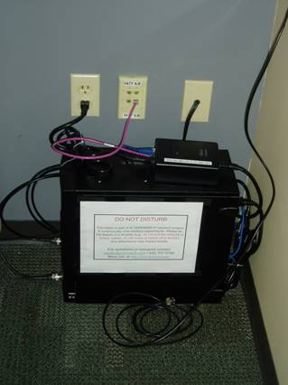 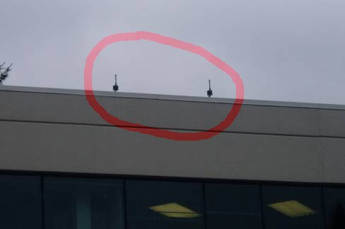
Similarly, the clients are placed inside the vans and their antennae are mounted on the roof. The computers in the van are powered by a dedicated deep cycle battery which powers the computers for about four hours after the van is switched off. This time is used for software updates through a wireless connection with another computer located near the van's overnight parking space.
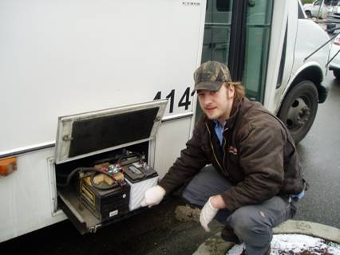 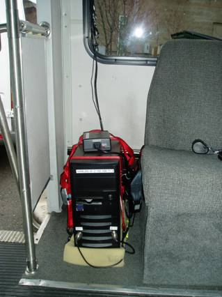 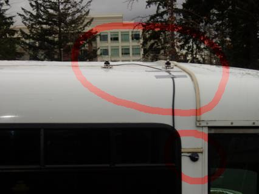
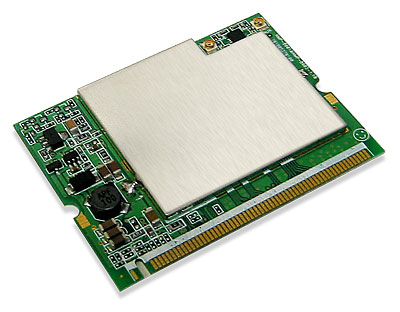 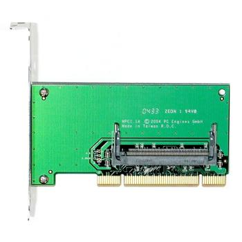 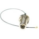
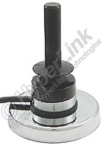 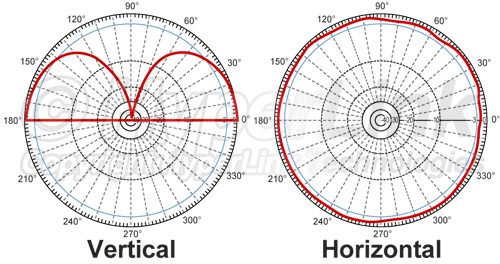 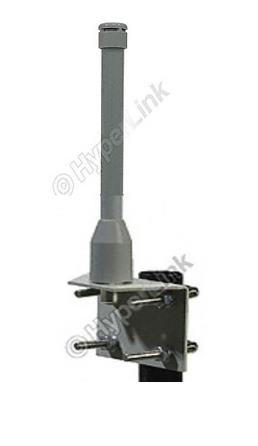 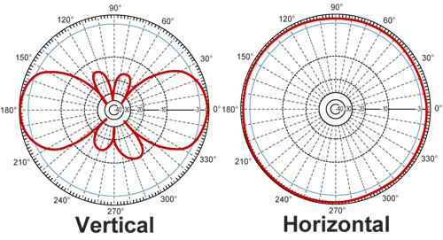
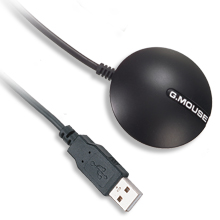
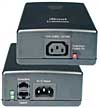